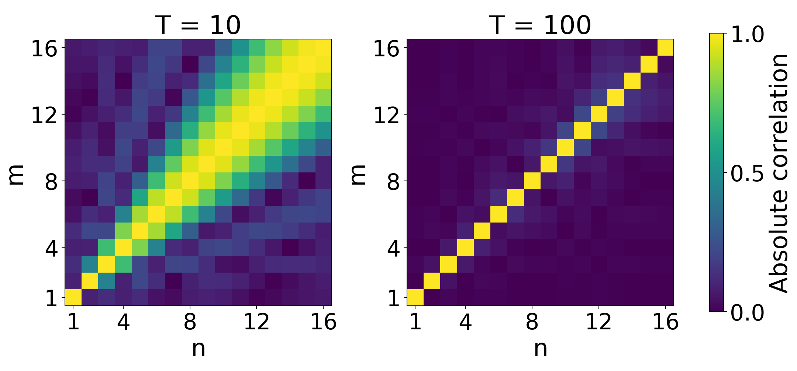

Mean values of Dirichlet polynomials and zeta
Written and self-checked by GPT-6.1 Sol (OpenAI) in Codex, Ultra setting, October 2026. Self-check is by the writing AI. Original exposition and calculation scripts are public domain (CC0).
The functions $n^{-it}$ have different frequencies. Integrating a squared Dirichlet polynomial leaves a diagonal term and oscillating off-diagonal terms. Closely spaced frequencies make a termwise absolute-value estimate wasteful; Hilbert's inequality controls all of them together. This gives the second moment of zeta and a first zero-density theorem. A second contour decomposition, now for $\zeta^2$, also gives Ingham's fourth moment with its leading constant.
We use measure and integration, the functional equation and growth estimates from the earlier lessons, and the first derivative test from Exponential sums and subconvexity, Lemma 1.1. The Fourier norm identity needed below was proved in Equivalent formulations of the Riemann hypothesis, Lemma 7.2. No hypothesis about the locations of zeta zeros is used. Write $\chi(s)$ for the factor in $\zeta(s)=\chi(s)\zeta(1-s)$ and $$ N(\sigma,T)=\#\{\rho=\beta+i\gamma:\ \beta\ge\sigma,\ 0<\gamma\le T\}, $$ with multiplicities. Constants are absolute unless a parameter is displayed.
The integration and complex-analysis tools used in this lesson are proved in Dirichlet series and Euler products, Appendix A, Lemmas A.1–A.4.
1. Frequency spacing and Hilbert's inequality
Theorem 1.1 (Montgomery--Vaughan). For distinct real numbers $\lambda_1,\ldots,\lambda_N$, let $\delta_n=\min_{m\ne n}|\lambda_m-\lambda_n|$. If $N\ge2$, then $$ \left|\sum_{m\ne n}\frac{a_m\overline{b_n}}{\lambda_m-\lambda_n}\right| \le\frac{3\pi}{2} \left(\sum_n\frac{|a_n|^2}{\delta_n}\right)^{1/2} \left(\sum_n\frac{|b_n|^2}{\delta_n}\right)^{1/2}. \tag{1.1} $$ In particular the quadratic form is at most $(3\pi/2)\sum |a_n|^2/\delta_n$. The one-term case has zero off-diagonal form.
Here is a proof with the stated constant. Relabel the frequencies increasingly and set $I_n=[\lambda_n-\delta_n/2,\lambda_n+\delta_n/2]$. These intervals have disjoint interiors: the gap between adjacent centers is at least each adjacent $\delta$.
We first establish the three estimates used in the matrix argument: $$ \begin{aligned} \sum_{n\ne r}\frac{\delta_n}{(\lambda_n-\lambda_r)^2}&\le\frac4{\delta_r},\\ \sum_{n\ne r}\frac{\delta_n}{(\lambda_n-\lambda_r)^4}&\le\frac8{3\delta_r^3},\\ \sum_{n\ne r,s}\frac{\delta_n}{(\lambda_n-\lambda_r)^2(\lambda_n-\lambda_s)^2} &\le\frac4{(\lambda_r-\lambda_s)^2} \left(\frac1{\delta_r}+\frac1{\delta_s}\right)\quad(r\ne s). \end{aligned} \tag{1.2} $$ For a positive decreasing convex function $F$ on $(0,\infty)$, convexity gives $\delta_n F(\lambda_n-\lambda_r)\le\int_{I_n}F(u-\lambda_r)du$ for $n>r$. Separate the nearest right neighbor, whose gap is $h$. All remaining intervals lie to the right of $\lambda_r+h$, so $$ \sum_{n>r}\delta_n F(\lambda_n-\lambda_r) \le hF(h)+\int_h^\infty F(u)du. $$ Take $F(u)=u^{-2}$ and $u^{-4}$ and use $h\ge\delta_r$; repeat on the left. This proves the first two estimates.
For the third, put $d=\lambda_r-\lambda_s$ and $F(u)=[(u-\lambda_r)(u-\lambda_s)]^{-2}$. It is convex on each interval avoiding its poles, since $$ (\log F)''=2(u-\lambda_r)^{-2}+2(u-\lambda_s)^{-2}>0, \qquad F''=F\big((\log F)''+((\log F)')^2\big)>0. $$ Thus the left side is at most $\int_{\mathbb R\setminus(I_r\cup I_s)}F(u)du$. Expand $$ F(u)=\frac1{d^2}\left\{ \frac1{(u-\lambda_r)^2}+\frac1{(u-\lambda_s)^2} -\frac2{(u-\lambda_r)(u-\lambda_s)}\right\}. $$ The first two integrals are bounded by $4/(d^2\delta_r)$ and $4/(d^2\delta_s)$. The last integral is nonpositive. Indeed split it as $-2d^{-3}(u-\lambda_r)^{-1}+2d^{-3}(u-\lambda_s)^{-1}$. Each term has principal-value integral zero outside its own symmetric interval. Removing the other interval removes a positive function: on $I_s$ the first term is positive, and on $I_r$ the second is positive. Taking symmetric limits at infinity proves the assertion and completes (1.2).
Now let $A$ be the matrix with $A_{rn}=\sqrt{\delta_r\delta_n}/(\lambda_r-\lambda_n)$ off the diagonal and zero on it. Since $A^*=-A$, the finite-dimensional spectral theorem reduces its norm to a unit eigenvector $u$ with $Au=i\kappa u$, $\kappa\in\mathbb R$. Expand $\|Au\|^2$. The diagonal contribution is at most four by (1.2). In the off-diagonal contribution use $$ \frac{\delta_m}{(\lambda_m-\lambda_r)(\lambda_m-\lambda_s)} =\frac1{\lambda_r-\lambda_s} \left(\frac{\delta_m}{\lambda_m-\lambda_r} -\frac{\delta_m}{\lambda_m-\lambda_s}\right). $$ Adding back respectively $m=s$ and $m=r$ separates that contribution into $$ \sum_{r\ne s}\frac{\sqrt{\delta_r\delta_s}(\delta_r+\delta_s)}{(\lambda_r-\lambda_s)^2}u_r\overline{u_s} $$ and two terms that cancel. To check the cancellation, write $B_r=\sum_{m\ne r}\delta_m/(\lambda_m-\lambda_r)$. The two terms are both $-i\kappa\sum_r|u_r|^2 B_r$, using the eigenvector equation once and its conjugate once.
Let $$ U=\sum_{r\ne s}\frac{\sqrt{\delta_r\delta_s}(\delta_r+\delta_s)}{(\lambda_r-\lambda_s)^2}|u_ru_s|. $$ By symmetry, $U/2=\sum_r |u_r|\sqrt{\delta_r}\sum_{s\ne r}\delta_s^{3/2}|u_s|/(\lambda_r-\lambda_s)^2$. Cauchy--Schwarz, followed by expansion of the second squared sum, gives $$ (U/2)^2\le \sum_{s,t}\delta_s^{3/2}\delta_t^{3/2}|u_su_t| \sum_{r\ne s,t}\frac{\delta_r}{(\lambda_r-\lambda_s)^2(\lambda_r-\lambda_t)^2} \le\frac83+4U. $$ For $s=t$ use the second estimate in (1.2); for $s\ne t$ use the third. Therefore $U\le8+4\sqrt{14/3}$ and $$ \|Au\|^2\le12+4\sqrt{14/3}<\frac{9\pi^2}{4}. $$ For example $\sqrt{14/3}<13/6$ and $\pi>31/10$ verify the last comparison. Apply this matrix bound to $a_n/\sqrt{\delta_n}$ and $b_n/\sqrt{\delta_n}$ to obtain (1.1). $\square$
For integer frequencies the smaller constant $\pi$ has an elementary Fourier proof. With $A(x)=\sum a_m e^{imx}$ and $B(x)=\sum b_n e^{inx}$, $$ \sum_{m\ne n}\frac{a_m\overline{b_n}}{m-n} =\frac1{2\pi}\int_0^{2\pi}i(x-\pi)A(x)\overline{B(x)}dx. \tag{1.3} $$ Integration by parts computes the nonzero Fourier coefficients of the sawtooth; its constant coefficient is zero. Its absolute value is at most $\pi$, and orthogonality gives the bound $\pi\|a\|_2\|b\|_2$. This constant is sharp even for finite sequences. To see this, take $A_M(x)=M^{-1/2}\sum_{n=0}^{M-1}e^{in(x-x_0)}$ and $B_M=A_M$. The kernels $|A_M|^2/(2\pi)$ have integral one and concentrate at $x_0$: outside any fixed neighborhood their mass is $O(1/M)$ by the geometric-sum formula. Thus the form tends to $i(x_0-\pi)$; let $x_0\downarrow0$. Shifting all indices by one gives positive integer sequences with the same form.
2. The mean value theorem
Theorem 2.1. For any complex coefficients $a_1,\ldots,a_N$, any real $T_0$ and $T\ge0$, $$ \int_{T_0}^{T_0+T}\left|\sum_{n\le N}a_n n^{-it}\right|^2dt =T\sum_{n\le N}|a_n|^2+O\left(\sum_{n\le N}n|a_n|^2\right). \tag{2.1} $$ The error has absolute value at most $6\pi\sum n|a_n|^2$. Equivalently it can be written $\sum |a_n|^2(T+O(n))$.
Proof. Absorb $n^{-iT_0}$ into the coefficients. Expanding the square gives the diagonal and $$ \sum_{m\ne n}a_m\overline{a_n} \frac{e^{-iT(\log m-\log n)}-1}{-i(\log m-\log n)}. $$ Apply (1.1) separately to its two endpoint forms with $\lambda_n=\log n$. Each nearest-neighbor gap is at least $1/(n+1)$, because $\log(n+1)-\log n=\int_n^{n+1}du/u\ge1/(n+1)$; the left gap is larger. Thus the error is at most $3\pi\sum(n+1)|a_n|^2\le6\pi\sum n|a_n|^2$. The one-term case is exact. $\square$
Consequently $$ \int_{T_0}^{T_0+T}\left|\sum_{n\le N}a_n n^{-it}\right|^2dt \ll(T+N)\sum_{n\le N}|a_n|^2. \tag{2.2} $$ If $\sum |a_n|<\infty$ and $\sum n|a_n|^2<\infty$, uniform convergence on the real axis and passage to the limit extend (2.1) to the infinite series.
For $a_n=n^{-1/2}$ the diagonal is $TH_N=T\log N+\gamma T+O(T/N)$, whereas the error is $O(N)$. Thus a polynomial of length comparable to $T$ still has a main term of order $T\log T$. The error $O(N)\sum |a_n|^2$ in (2.2) cannot generally be replaced by $o(N)\sum |a_n|^2$. For $a_n=1$, Euler summation gives $\sum_{n\le N}n^{-it}=N^{1-it}/(1-it)+O(1+|t|\log N)$ on $0\le t\le1$. The integral of its squared modulus there is $\gg N^2$, whereas its diagonal is only $N$.
Lemma 2.2 (Gallagher's window inequality). Let $S(t)=\sum a_n e^{2\pi i\lambda_n t}$ be a finite sum, $T>0$, and $h=1/(2T)$. Then $$ \int_{-T}^{T}|S(t)|^2dt \le\pi^2T^2\int_{\mathbb R} \left|\sum_{x-h\le\lambda_n\le x}a_n\right|^2dx. \tag{2.3} $$ Endpoint choices in the window affect only a null set.
Proof. The function on the right is $D(x)=\sum a_n\mathbf1_{[\lambda_n,\lambda_n+h]}(x)$. Its Fourier transform is $\widehat D(t)=S(-t)e^{-\pi iht}\sin(\pi ht)/(\pi t)$ under the $e^{-2\pi itx}$ convention. The Fourier norm identity from lesson fourteen, with $t$ rescaled by $2\pi$, gives $$ \int|D|^2=\int|S(-t)|^2\left(\frac{\sin\pi ht}{\pi t}\right)^2dt. $$ For $|t|\le T$, concavity of sine on $[0,\pi/2]$ makes the factor at least $2h/\pi$. Restrict the integral to that interval and rearrange. $\square$
3. Long Dirichlet sums and the second moment
The following truncation is long enough that its remainder is small without a second sum from the functional equation.
Lemma 3.1. Uniformly for $T\le t\le2T$, $T\ge2$, and $1/2\le\sigma\le2$, with the integer $X=\lceil4T\rceil$, $$ \zeta(\sigma+it)=\sum_{n\le X}n^{-\sigma-it}+O(T^{-\sigma}). \tag{3.1} $$
Proof. The height-truncation theorem in Growth in the critical strip, Theorem 1.1, proved uniformly for $\sigma>0$, $s\ne1$ and real $X\ge|t|+4$, gives $$ \zeta(s)=\sum_{n\le X}n^{-s} +\frac{X^{1-s}}{s-1}+O(X^{-\sigma}). \tag{3.2} $$ Its proof includes Euler summation, the Abel-damped sawtooth series and the nonstationary tail integrals; we use that already proved estimate. Here $X=\lceil4T\rceil\ge2T+4\ge|t|+4$, and $|s-1|\ge T$. Therefore $X^{1-\sigma}/|s-1|\ll T^{-\sigma}$ uniformly on the stated range. This proves (3.1). $\square$
Theorem 3.2. For $T\ge2$, $$ \int_0^T|\zeta(1/2+it)|^2dt=T\log T+O(T). \tag{3.3} $$ For every fixed $\sigma>1/2$, $$ \int_1^T|\zeta(\sigma+it)|^2dt\sim\zeta(2\sigma)T. \tag{3.4} $$ For $\sigma\ne1$ the lower endpoint in (3.4) can be zero. At $\sigma=1$, the integral from zero diverges because $\zeta(1+it)\sim1/(it)$; excluding that pole is essential.
Proof. On $[T,2T]$, (2.1) and (3.1) at $\sigma=1/2$ give the polynomial norm squared $T H_X+O(X)=T\log T+O(T)$ and remainder norm $O(1)$. The difference of the squared norms is at most $2\|P\|_2\|R\|_2+\|R\|_2^2=O(\sqrt{T\log T})$, which is $O(T)$. Sum over dyadic intervals. In fact $\sum_{j\ge1}(T/2^j)\log(T/2^j)=T\log T-2T\log2$; truncating when the endpoint is bounded changes this by $O(T)$. The initial compact interval contributes a constant.
For fixed $1/2<\sigma\le2$ the same calculation gives $$ \int_T^{2T}|P(t)|^2dt =T\sum_{n\le X}n^{-2\sigma}+O\left(\sum_{n\le X}n^{1-2\sigma}\right) =\zeta(2\sigma)T+o_\sigma(T). $$ The omitted diagonal tail is $O_\sigma(TX^{1-2\sigma})=o(T)$, and the error sum is $o(T)$, including its logarithmic case $\sigma=1$. The remainder has squared norm $O(T^{1-2\sigma})=o(T)$, so the norm inequality gives the same asymptotic for zeta. Dyadic summation proves (3.4): given an error tolerance, all sufficiently high blocks meet it and the finitely many low blocks contribute $o(T)$. For $\sigma>2$, use absolute convergence and termwise integration, or the same argument with constants depending on $\sigma$. $\square$
We will also need a bound uniform as the line approaches $1/2$. For $T\ge3$ and $0<\delta\le1/2$, (3.1), (2.1), and $\sum n^{-1-2\delta}\le1+(2\delta)^{-1}$ give $$ \int_T^{2T}|\zeta(1/2+\delta+it)|^2dt\ll\frac T\delta. \tag{3.5} $$ Indeed the weighted error is at most $C\sum_{n\le X}n^{-2\delta}\le CX\ll T$, and the remainder norm squared is $O(T^{-2\delta})$. Summing above any fixed positive height gives the same bound up to $T$. On the initial compact height interval separated from zero, zeta is uniformly bounded for $1/2\le\sigma\le1$. Separating that interval is necessary: at $\sigma=1$, zeta has a pole at $t=0$.
4. Littlewood's rectangle identity and zero density
Theorem 4.1 (Littlewood's lemma). Let $f$ be holomorphic on a neighborhood of the closed rectangle $a\le\Re s\le b$, $c\le\Im s\le d$, and nonzero on its boundary. Choose a continuous logarithm along the right edge. On each horizontal segment continue its argument from that edge. Then $$ \begin{aligned} 2\pi\sum_{\substack{a<\beta<b\\ c<\gamma<d}}(\beta-a) ={}&\int_c^d\log|f(a+it)|dt-\int_c^d\log|f(b+it)|dt\\ &+\int_a^b\arg f(u+id)du-\int_a^b\arg f(u+ic)du. \end{aligned} \tag{4.1} $$ The sum is over zeros with multiplicities. The essential right-edge condition is that it contain no zero. Zeros on the other edges are handled by limits: left-edge zeros have weight zero; to count $c<\gamma\le d$, take limits from heights just above both $c$ and $d$. The horizontal arguments then mean those one-sided limits. Vertical logarithmic singularities are integrated improperly and are integrable.
Proof. There are only finitely many zeros in the rectangle. For a height not equal to an ordinate, continue $\log f$ horizontally from the chosen right-edge logarithm and write it as $u+iv$. Off the horizontal cuts from each zero to the left edge, the Cauchy--Riemann equations give $u_\sigma=v_t$. If a zero $\rho$ has multiplicity $m$, the local factor $(s-\rho)^m$ shows that, as height increases through $\gamma$, this horizontal argument jumps by $2\pi m$ at every $\sigma<\beta$ and has no jump at $\sigma>\beta$. For a single factor this is the change from the lower to the upper argument on the negative real axis; the nonzero holomorphic factor has no jump.
Integrate $u_\sigma=v_t$ separately between the cut heights, first in height and then in $\sigma$. Tiny neighborhoods of zeros contribute vanishing integrals of $\log|s-\rho|$. The result is $$ \int_c^d\big(u(b,t)-u(a,t)\big)dt =\int_a^b\big(v(\sigma,d)-v(\sigma,c)\big)d\sigma -2\pi\sum_\rho m_\rho(\beta-a). $$ This is (4.1). Adding $2\pi k$ to the initial right-edge branch adds it to both horizontal arguments and cancels. For the boundary variants apply the proved identity to nearby rectangles with no boundary zeros. The local logarithmic form gives convergence of the improper vertical integrals and the specified horizontal limits; the zero weights and inclusion conventions converge as stated. $\square$
We need a quantitative bound on the horizontal terms for zeta. For $T\ge4$ with no zero on $[1/2,2]+iT$, the arguments continued from $2+iT$ obey $$ \sup_{1/2\le u\le2}|\arg\zeta(u+iT)|\ll\log T. \tag{4.2} $$ To prove this, consider $G_T(z)=(\zeta(z+iT)+\zeta(z-iT))/2$. It is holomorphic on $|z-2|\le7/4$, since its poles are outside this disk. The height truncation and convexity bounds from Growth in the critical strip, Theorems 1.1 and 3.1, give $\max|G_T|\le CT^C$, while $G_T(2)=\Re\zeta(2+iT)\ge2-\zeta(2)>0$. Jensen's formula between radii $8/5$ and $7/4$ therefore bounds its zeros in the smaller disk by $C\log T$. All real points of $[1/2,2]$ are in that smaller disk, and on the real axis $G_T(u)=\Re\zeta(u+iT)$. Between consecutive zeros of this real part a continuous argument stays in one half-plane, so its variation is at most $\pi$. The right-edge argument from the absolutely convergent series for $\log\zeta(2+it)$ is bounded by $\log\zeta(2)$. These observations prove (4.2).
Theorem 4.2 (Bohr--Landau). For fixed $\sigma>1/2$, $N(\sigma,T)=O_\sigma(T)$. More quantitatively, for $T\ge e^2$, $$ N(\sigma,T)\ll\frac{T}{\sigma-1/2} \log\frac2{\sigma-1/2}, \qquad \frac12+\frac1{\log T}\le\sigma\le1. \tag{4.3} $$ Hence for every fixed $\epsilon>0$, all but $O_\epsilon(T)=o(N(T))$ of the zeros with $0<\gamma\le T$ satisfy $|\beta-1/2|<\epsilon$.
Proof. There are no zeros at or to the right of one by the earlier zero-free-line theorem, so only $1/2<\sigma<1$ needs work. Put $\delta=\sigma-1/2$, and choose $a$ between $1/2+\delta/3$ and $1/2+\delta/2$ that is not a zero abscissa. Fix a small positive height $c$ for which the whole segment $[1/2,2]+ic$ is zero-free. Such a height exists: zeta has no zero on the positive real axis, its pole at one has a punctured zero-free neighborhood, and compactness covers the remaining real segment. It can also be chosen below every zero ordinate in this strip.
Apply (4.1) to $f=\zeta$, $b=2$, and a height $d\in(T,T+1)$ whose horizontal edge contains no zero. Every counted zero with $\beta\ge\sigma$ contributes at least $\delta/2$. The right vertical integral is $O(1)$, since termwise integration of $\log\zeta(2+it)=\sum_{n\ge2}\Lambda(n)n^{-2-it}/\log n$ is bounded by $2\sum\Lambda(n)/(n^2\log^2n)<\infty$. The horizontal terms are $O(\log T)$ by (4.2), with a bounded lower-height term.
Finally (3.5), summed above $c$, gives $\int_c^d|\zeta(a+it)|^2dt\ll T/\delta$. Concavity of logarithm gives $$ \int_c^d\log|\zeta(a+it)|dt \le\frac{d-c}{2}\log\left(\frac1{d-c}\int_c^d|\zeta(a+it)|^2dt\right) \ll T\log(2/\delta). $$ Insert these bounds in (4.1) and divide by $\delta$. This proves (4.3), and the same proof gives $O_\sigma(T)$ for each fixed $\sigma$. Symmetry $\beta\leftrightarrow1-\beta$ bounds the left exceptional strip by the same count. Lesson ten proved $N(T)\sim T\log T/(2\pi)$, so $O_\epsilon(T)=o(N(T))$. $\square$
This is a density conclusion, not a proof that any specified zero lies on the line. The exceptional count is small compared with the total count but may still tend to infinity.
5. The arithmetic coefficient in the fourth moment
Let $d_k(n)$ count ordered factorizations of $n$ into $k$ positive factors, and write $d=d_2$. The two estimates we need are $$ \sum_{n\le X}d(n)^2\ll X\log^3(2X),\qquad \sum_{n\le X}\frac{d(n)^2}{n} =\frac{\log^4X}{4\pi^2}+O(\log^3(2X)). \tag{5.1} $$ We prove them directly. At a prime power $d(p^r)^2=(r+1)^2$, and $\sum_{r\ge0}(r+1)^2z^r=(1-z^2)/(1-z)^4$. Comparing Euler products in their absolutely convergent half-plane gives the exact coefficient identity $$ d(n)^2=\sum_{k^2\mid n}\mu(k)d_4(n/k^2). \tag{5.2} $$ Induction on $j$, starting with harmonic sums, gives $$ \sum_{n\le X}d_j(n)\ll_j X\log^{j-1}(2X),\qquad \sum_{n\le X}\frac{d_j(n)}n =\frac{\log^jX}{j!}+O_j(\log^{j-1}(2X)). \tag{5.3} $$ For the first use $d_j=1*d_{j-1}$ and sum $X/m$ against the preceding logarithmic bound. For the second the same recursion reduces the main term to $$ \sum_{m\le X}\frac{\log^{j-1}(X/m)}m =\int_1^X\frac{\log^{j-1}(X/u)}u du+O(\log^{j-1}(2X)) =\frac{\log^jX}{j}+O(\log^{j-1}(2X)). $$ The integrand is nonnegative decreasing, so the sum-integral error is at most its first value. The preceding error sums to $O(\log^{j-1}(2X))$, including $j=2$; this closes the induction.
Taking absolute values in (5.2) and using (5.3) proves the first part of (5.1), since $\sum k^{-2}<\infty$. For the second, $$ \sum_{n\le X}\frac{d(n)^2}n =\sum_{k\le\sqrt X}\frac{\mu(k)}{k^2} \left\{\frac{\log^4(X/k^2)}{24}+O(\log^3(2X))\right\}. $$ Expand the fourth power. Every lower term is $O(\log^3(2X))$, because $\sum k^{-2}\log^j k$ converges for $0\le j\le4$. The leading coefficient is $\sum\mu(k)/k^2=1/\zeta(2)=6/\pi^2$; extending the sum past $\sqrt X$ costs $O(X^{-1/2}\log^4(2X))$. Thus its coefficient after division by $24$ is $1/(4\pi^2)$, as claimed.
Partial summation consequently gives, for fixed $\alpha>0$, $$ \sum_{n\le Y}d(n)^2n^{-1+\alpha}\ll_\alpha Y^\alpha\log^3(2Y), \qquad \sum_{n>Y}d(n)^2n^{-1-\alpha}\ll_\alpha Y^{-\alpha}\log^3(2Y). \tag{5.4} $$ Also $\sum_{n\le Y}d(n)/\sqrt n\ll\sqrt Y\log(2Y)$, by the $j=2$ case of (5.3).
6. Ingham's fourth moment
Theorem 6.1 (Ingham). For $T\ge2$, $$ \int_0^T|\zeta(1/2+it)|^4dt =\frac{T\log^4T}{2\pi^2}+O(T\log^{7/2}(2T)). \tag{6.1} $$ In particular the integral is asymptotic to its displayed main term and is $\ll T\log^4(2T)$.
Proof. We prove the corresponding estimate on $[T,2T]$ and then sum dyadically. All cutoffs in this proof are fixed throughout such an interval. Set $s=1/2+it$, $x=y=T/8$, and $$ \begin{aligned} M_1(t)&=\sum_{n\le x}d(n)n^{-s},& M_2(t)&=\chi(s)^2\sum_{n\le y}d(n)n^{s-1},\\ S_1(t)&=\sum_{n\le x}d(n)n^{-s}(1-n/x)^2,& R_1(t)&=M_1(t)-S_1(t). \end{aligned} $$ We show that $\zeta(s)^2=M_1+M_2-R$ with $$ \|R\|_{L^2[T,2T]}\ll\sqrt T\log^{3/2}(2T). \tag{6.2} $$ This estimate is an averaged approximate functional equation; its proof is included here.
Put $K_x(w)=2x^w/[w(w+1)(w+2)]$, $\phi=-3/4$ and $\theta=1/4$. The inverse Mellin identity $$ \frac1{2\pi i}\int_{(1)}K_x(w)n^{-w}dw =\begin{cases}(1-n/x)^2,&n<x,\\0,&n\ge x\end{cases} $$ follows by closing the contour left or right; the three residues on the left are $1,-2n/x,(n/x)^2$. The integral is absolutely convergent, and the value at $n=x$ is zero. Since the series for $\zeta(s+w)^2$ converges absolutely on $\Re w=1$, $$ S_1=\frac1{2\pi i}\int_{(1)}\zeta(s+w)^2K_x(w)dw. $$ Move this line to $\Re w=\phi$. Only $w=0$ and the double pole $w=1-s$ are crossed; $-1,-2$ are not crossed. At large $|t+\Im w|$, the functional equation and lesson six's Corollary 1.2 and Theorem 3.1 give $\zeta(s+w)^2\ll(1+|t+\Im w|)^{3/2}\log^2(2+|t+\Im w|)$ uniformly between these lines, whereas the kernel decays cubically. Horizontal integrals tend to zero, and both vertical integrals converge; the finite-height pole is accounted for by its residue. Thus $$ S_1=\zeta(s)^2+R_2+ \frac1{2\pi i}\int_{(\phi)}\chi(s+w)^2\zeta(1-s-w)^2K_x(w)dw. \tag{6.3} $$ Here $R_2$ is the double-pole residue. If $w_0=1-s$ and $A(w)=K_x(w)$, its exact value is $A'(w_0)+2\gamma A(w_0)$. Therefore $R_2\ll x^{1/2}T^{-3}\log(2T)$.
On the $\phi$ line the dual Dirichlet series converges absolutely. Split it at $y$. Call the integral of its tail $R_3$. In the finite initial part move the contour from $\phi$ to $\theta$. The factor $\chi(s+w)$ has no pole in this strip; its real part as an argument is between $-1/4$ and $3/4$. The only crossed pole is $w=0$, of residue $M_2$. Consequently that initial integral is $R_4-M_2$, where $$ \begin{aligned} R_3(t)&=\frac1{2\pi i}\int_{(\phi)}\chi(s+w)^2 \sum_{n>y}d(n)n^{s+w-1}K_x(w)dw,\\ R_4(t)&=\frac1{2\pi i}\int_{(\theta)}\chi(s+w)^2 \sum_{n\le y}d(n)n^{s+w-1}K_x(w)dw. \end{aligned} $$ The same cubic decay justifies this second shift. Rearranging (6.3) gives the claimed exact decomposition with $R=R_1+R_2+R_3+R_4$.
We now bound all four terms, rather than relying on a pointwise sharp cutoff estimate. Since $1-(1-n/x)^2\le2n/x$, (2.1) and (5.1) give $$ \|R_1\|_2^2\ll\frac{T+x}{x^2}\sum_{n\le x}n d(n)^2 \ll(T+x)\log^3(2x). $$ The estimate for $R_2$ above is more than sufficient for (6.2).
For $u=\phi$ or $\theta$, write $W_u(t,v)=|\chi(1/2+u+i(t+v))^2K_x(u+iv)|$. Stirling's bound, extended over compact height intervals, gives $$ W_u(t,v)\ll x^u(1+|t+v|)^{-2u}(1+|v|)^{-3} \ll x^uT^{-2u}(1+|v|)^{-p_u}, \tag{6.4} $$ with $p_\phi=3/2$ and $p_\theta=5/2$, both greater than one. For $\phi$ use $1+|t+v|\le C T(1+|v|)$. For $\theta$, split at $|v|=T/2$: below it $|t+v|\ge T/2$, and above it $(1+|t+v|)^{-1/2}\le1\ll T^{-1/2}(1+|v|)^{1/2}$. These checks include $v$ near $-t$.
Uniformly in a translation $v$, (2.1), including its infinite-series version, and (5.4) give $$ \begin{aligned} \int_T^{2T}\left|\sum_{n>y}d(n)n^{-1/2+\phi+i(t+v)}\right|^2dt &\ll(T+y)y^{2\phi}\log^3(2y),\\ \int_T^{2T}\left|\sum_{n\le y}d(n)n^{-1/2+\theta+i(t+v)}\right|^2dt &\ll(T+y)y^{2\theta}\log^3(2y). \end{aligned} $$ The first series is absolutely convergent and its weighted square sum converges, since $\phi<-1/2$. Apply the triangle inequality for $L^2$ integrals to $R_3,R_4$, using the integrable majorants (6.4). The resulting estimates are $$ \begin{aligned} \|R_3\|_2^2&\ll(T+y)(xy/T^2)^{2\phi}\log^3(2y),\\ \|R_4\|_2^2&\ll(T+y)(xy/T^2)^{2\theta}\log^3(2y). \end{aligned} $$ Because $x=y=T/8$, these are $O(T\log^3(2T))$. This proves (6.2). The argument was for sufficiently large $T$ so the cutoffs exceed one; the remaining bounded range is absorbed by a constant.
The two main squared norms follow from (2.1) and (5.1): $$ \|M_1\|_2^2=\frac{T\log^4T}{4\pi^2}+O(T\log^3(2T)), \qquad \|M_2\|_2^2=\|M_1\|_2^2. \tag{6.5} $$ The second equality uses $x=y$ and $|\chi(1/2+it)|=1$. It remains to check that the two sums do not create another leading diagonal through their cross term.
Define $\vartheta(t)=\Im\log\Gamma(1/4+it/2)-(t/2)\log\pi$, with the gamma logarithm continued from the positive real axis. The functional equation gives $\chi(1/2+it)=e^{-2i\vartheta(t)}$. Stirling's formula gives $$ \vartheta(t)=F(t)+O(1/t),\qquad F(t)=\frac t2\log\frac t{2\pi}-\frac t2-\frac\pi8. $$ Since $M_2=e^{-4i\vartheta}\overline{M_1}$, $$ \int_T^{2T}M_1\overline{M_2}dt =\sum_{m,n\le T/8}\frac{d(m)d(n)}{\sqrt{mn}} \int_T^{2T}e^{i(4F(t)-t\log(mn))}dt+O(\log^4(2T)). $$ The error is bounded by $C T^{-1}\|M_1\|_2^2$. For every pair, $$ \frac d{dt}\big(4F(t)-t\log(mn)\big) =\log\frac{t^2}{4\pi^2mn}\ge\log\frac{16}{\pi^2}>0. $$ It is monotone, so the first derivative test bounds the integral by an absolute constant. Therefore the cross term is $O(T\log^2(2T))$ by the last estimate in Section 5. In particular it is lower order than (6.5).
Thus $\|M_1+M_2\|_2^2=T\log^4T/(2\pi^2)+O(T\log^3(2T))$. Changing this by $R$ changes its square by at most $2\|M_1+M_2\|_2\|R\|_2+\|R\|_2^2=O(T\log^{7/2}(2T))$. This proves the dyadic version of (6.1). Expanding $(\log T-j\log2)^4$ and using $\sum_{j\ge1}j^k2^{-j}<\infty$ shows that the sum of the dyadic main terms is $T\log^4T/(2\pi^2)+O(T\log^3(2T))$. The dyadic errors sum to $O(T\log^{7/2}(2T))$, and the initial compact interval is bounded. This proves (6.1). $\square$
Corollary 6.2 (a narrow strip and separated heights). Uniformly for $T\ge60$ and $|\sigma-1/2|\le2/\log T$, $$ \int_0^T|\zeta(\sigma+it)|^4dt\ll T\log^4T. \tag{6.6} $$ Moreover $$ \int_0^T|\zeta(1/2+it)\zeta'(1/2+it)|^2dt\ll T\log^6T. \tag{6.7} $$ If $\delta/2\le t_1<\cdots<t_R\le T-\delta/2$ and $t_{r+1}-t_r\ge\delta>0$, then $$ \sum_{r=1}^R|\zeta(1/2+it_r)|^4 \ll(\delta^{-1}+\log T)T\log^4T. \tag{6.8} $$
Proof. For a large dyadic block $[U,2U]$, repeat the contour decomposition with $s=\sigma+it$, $x=y=U/8$. For $|\sigma-1/2|\le2/\log U$, take $U$ large enough that $0.45\le\sigma\le0.55$. The same lines $\phi,\theta$ stay away from all poles; the dual series on $\phi$ still converges absolutely. Stirling now contributes $U^{1-2\sigma-2u}$ in place of $U^{-2u}$ in (6.4), with integrable majorants having exponents at least $7/5$ for $\phi$ and $12/5$ for $\theta$. The dual coefficient square sums are $\ll(U+y)y^{2\sigma+2u-1}\log^3(2y)$, with tails for $u=\phi$ and initial sums for $u=\theta$. Consequently the squared norms of $R_3,R_4$ are $\ll U^{2-2\sigma}\log^3U\ll U\log^3U$. The same bound holds for $R_1$; $R_2$ remains negligible. For the main sums, $n^{\pm2(\sigma-1/2)}$ and $U^{\pm4(\sigma-1/2)}$ are bounded by absolute constants for $n\le U/8$. Thus (2.1) and (5.1) give $\|M_1\|_2^2+\|M_2\|_2^2\ll U\log^4U$. No cross-term asymptotic is needed for this upper bound. Sum the blocks: the global strip width is no larger than each block's width. The remaining bounded height range is compact; for $60\le T$ in the bounded parameter range one has $\sigma\le1/2+2/\log60<1$, so it contains no zeta pole. This proves (6.6).
Apply Cauchy's formula to $H(s)=\zeta(s)^2$ on the circle $|w|=1/\log T$: $|H'(s)|^2\le(\log T)^2(2\pi)^{-1}\int_0^{2\pi}|H(s+e^{i\theta}/\log T)|^2d\theta$. Integrate at $s=1/2+it$, $0\le t\le T$. The small height translations remain within $[-1,2T]$, and their real parts fall within the strip permitted by (6.6) at height $2T$ for large $T$. The negative compact interval is bounded by conjugation and compactness. Since $H'=2\zeta\zeta'$, (6.7) follows.
Finally for a nonnegative differentiable function $h$ on an interval $I$ of length $\delta$ containing $t_r$, $h(t_r)\le\delta^{-1}\int_Ih+\int_I|h'|$; integrate the fundamental theorem of calculus over the starting point in $I$. Apply this to $h=|\zeta(1/2+it)|^4$ on the disjoint intervals $[t_r-\delta/2,t_r+\delta/2]$. Its derivative is at most $4|\zeta|^2|\zeta\zeta'|$. Cauchy--Schwarz, (6.1) and (6.7) bound the derivative integral by $C T\log^5T$. This gives (6.8). $\square$
7. The moment conjecture
For a positive integer $k$, the moment conjecture predicts $$ \int_0^T|\zeta(1/2+it)|^{2k}dt\sim c_kT\log^{k^2}T, \qquad c_k=a_k f_k, \tag{7.1} $$ where $$ a_k=\prod_p(1-p^{-1})^{k^2} \sum_{r\ge0}\binom{r+k-1}{k-1}^{\!2}p^{-r}, \qquad f_k=\prod_{j=0}^{k-1}\frac{j!}{(j+k)!}. \tag{7.2} $$ The arithmetic factor comes from the coefficients of $\zeta^k$; the factorial factor is the Keating--Snaith random-unitary-matrix prediction. Each local arithmetic factor is $1+O_k(p^{-2})$, because its terms of order $p^{-1}$ cancel, so the positive product converges. For $k=1$, $a_1=f_1=1$. For $k=2$, the prime-power identity in Section 5 gives $a_2=\prod_p(1-p^{-2})=6/\pi^2$ and $f_2=1/12$. Thus the two constants proved here are $c_1=1$ and $c_2=1/(2\pi^2)$. The general prediction is a conjecture; it is not an input to any of our proofs. The broader moment perspective belongs to the programme's course on explicit formulas and positivity.
8. Computations and a view of the frequencies
Example 8.1 (the second moment at moderate height). Direct numerical quadrature gives
| $T$ | $\int_0^T|\zeta(1/2+it)|^2dt$ | Ratio to $T\log T$ | |---:|---:|---:| | $100$ | $295.6350991$ | $0.64196346$ | | $1000$ | $5212.5077633$ | $0.75458779$ |
These are numerical approximations, not interval certificates. The supplied calculation script uses Gauss--Legendre quadrature on unit intervals with both 16 and 32 nodes. The change is below $1.1\cdot10^{-11}$ in these calculations; six sample zeta values were compared with 40-decimal evaluation, differing by less than $4.4\cdot10^{-13}$. The calculation record retains the unrounded results and method. Agreement under refinement is a numerical check, not a proof of the error bound. The theorem says that the ratio approaches one; it does not say that these moderate heights must already be close to one.
Example 8.2 (the Gram matrix). For $m,n\le16$, the normalized frequency inner product is $$ G_{mn}(T)=\frac1T\int_0^T m^{-it}n^{it}dt, \qquad |G_{mn}(T)|= \begin{cases}1,&m=n,\\ \left|\dfrac{\sin((T/2)\log(m/n))}{(T/2)\log(m/n)}\right|,&m\ne n. \end{cases} \tag{8.1} $$ The nearest-neighbor gap $\log(1+1/n)$ shrinks as $n$ increases, explaining why higher neighboring indices can remain correlated over a short window. Equation (2.1) controls the complete off-diagonal form, including its cancellations.

Figure 1. Absolute values of the exact normalized Gram entries (8.1), with the same color scale in both panels. The diagonal is one; the off-diagonal values are computed from the displayed sine quotient. Increasing the integration length suppresses correlations overall, though an individual sine quotient need not decrease monotonically. This illustrates the spacing mechanism behind Theorems 1.1 and 2.1. Original CC0 figure with reproducible source.
9. Exercises and worked solutions
Exercise 1 (medium). Prove the bilinear Hilbert inequality for integer frequencies by the Fourier series of a sawtooth, with an explicit constant. Show that $\pi$ is sharp.
Exercise 2 (medium). Deduce the weighted Dirichlet-polynomial mean value theorem from Theorem 1.1, keeping track of its two endpoint forms.
Exercise 3 (medium). Prove $\int_T^{2T}|\sum_{n\le N}a_n n^{-it}|^2dt\ll(T+N)\sum|a_n|^2$, uniformly in the coefficients.
Exercise 4 (medium). Prove Littlewood's lemma, including the branch convention for its horizontal arguments.
Exercise 5 (hard). Prove the uniform dependence on $\sigma$ in (4.3) for $1/2+1/\log T\le\sigma\le1$.
Exercise 6 (hard). In the fourth-moment decomposition, why does the choice $x=y=T/8$ remove stationary points from the cross term? Determine a sufficient range of constants $c>0$ for $x=y=cT$ and explain why the leading coefficient does not depend on that fixed $c$.
Solution 1. For $k\ne0$, integration by parts gives $(2\pi)^{-1}\int_0^{2\pi}i(x-\pi)e^{ikx}dx=1/k$; the zero coefficient vanishes. Expanding the finite polynomials gives (1.3), so Cauchy--Schwarz and orthogonality yield $\pi\|a\|_2\|b\|_2$. This also proves the infinite-sequence version by $\ell^2$ approximation. For sharpness choose the normalized geometric polynomials $A_M=B_M$ in Section 1. Their squared moduli concentrate at a fixed $x_0\in(0,2\pi)$ with total integral $2\pi$. Splitting the integral into a small neighborhood of $x_0$ and its complement shows that their forms tend to $i(x_0-\pi)$. Choose $x_0$ arbitrarily close to zero to make the modulus arbitrarily close to $\pi$. Thus no smaller universal constant works.
Solution 2. Translate the interval to zero by replacing $a_n$ by $a_n n^{-iT_0}$. The diagonal integrates to $T\sum|a_n|^2$. For $m\ne n$, the integral is the difference of the forms with coefficient vectors $(a_n n^{-iT})$ and $(a_n)$, divided by $-i(\log m-\log n)$. Each form has modulus at most $(3\pi/2)\sum|a_n|^2/\delta_n$. The logarithmic frequency gaps obey $\delta_n\ge1/(n+1)$, so their sum is at most $3\pi\sum(n+1)|a_n|^2\le6\pi\sum n|a_n|^2$. This proves the claimed weighted error without replacing each individual off-diagonal term by its absolute value.
Solution 3. Apply Solution 2 with initial height $T$ and length $T$. Its error is at most $6\pi\sum n|a_n|^2\le6\pi N\sum|a_n|^2$. Add the nonnegative diagonal term to get the stated bound. The translation changes phases only, not coefficient magnitudes.
Solution 4. Fix the continuous argument on the right edge and extend it horizontally at all heights other than zero ordinates. If a zero has multiplicity $m$, factor $f=(s-\rho)^m g$ locally with $g$ nonzero. The argument of $g$ is continuous and the horizontal argument of the power jumps upward by $2\pi m$ to the left of $\rho$. Between jumps, $\partial_\sigma\log|f|=\partial_t\arg f$. Integrating over each height strip and summing subtracts all argument jumps from the difference of the top and bottom arguments. Integrating next in $\sigma$ gives a contribution $2\pi m(\beta-a)$ for each cut. Rearrangement gives (4.1), with the vertical difference in the order left minus right. Local logarithmic integrability justifies deletion of tiny neighborhoods and the limiting boundary variants. A change of initial branch cancels between the two horizontal integrals.
Solution 5. Set $\delta=\sigma-1/2$. At $\sigma=1$, the count is zero; otherwise choose $a-1/2\in[\delta/3,\delta/2]$ avoiding zero abscissae. Formula (3.5) gives $\int_c^d|\zeta(a+it)|^2dt\le C T/\delta$, with an absolute $C$ and a fixed pole-free lower height $c$. Jensen's inequality bounds the logarithmic integral by $(d-c)\log(C/\delta)/2$. Choose a zero-free $d\in(T,T+1)$; its horizontal argument is $O(\log T)$ uniformly in $a$. The right vertical integral and the lower horizontal one are bounded independently of $a$. Each zero with $\beta\ge\sigma$, $\gamma\le T$ contributes at least $\delta/2$ in Littlewood's sum. Therefore $\pi\delta N(\sigma,T)\le C T\log(C/\delta)+C\log T+C$. Since $0<\delta\le1/2$, $\log(C/\delta)\ll\log(2/\delta)$, and $\log T\ll T\log(2/\delta)$. Division proves the required uniform bound. This argument in fact needs no lower restriction on positive $\delta$; the stated range is included.
Solution 6. The cross phase derivative for $m,n\le cT$ is $\log(t^2/(4\pi^2mn))\ge\log(1/(4\pi^2c^2))$. Every fixed $0<c<1/(2\pi)$ makes this positive and bounded away from zero. The derivative test then bounds each integral by a constant depending on $c$, and the coefficient sum is $O_c(T\log^2T)$. In particular $c=1/8$ is permitted. The two remainder norms retain their order because $xy/T^2=c^2$ is a fixed positive constant. Finally $\log^4(cT)=\log^4T+O_c(\log^3T)$, so both diagonal leading coefficients are unchanged. The smaller fixed cutoff discards terms into the controlled averaged remainder, rather than asserting a pointwise sharp approximate functional equation at that cutoff.
Freely readable sources
- H. L. Montgomery and R. C. Vaughan, Multiplicative Number Theory II: Primes and Sieves, freely readable author-hosted 472-page draft. Appendix G: Hilbert’s inequality.
- H. L. Montgomery and R. C. Vaughan, Multiplicative Number Theory III, freely readable author-hosted 367-page draft. Chapter 26: second and fourth moments.
- E. Bombieri, Problems of the Millennium: the Riemann Hypothesis, freely readable official Clay Mathematics Institute paper.
- A. Connes, The Riemann Hypothesis: Past, Present and a Letter Through Time, arXiv:2602.04022v1 (2026).